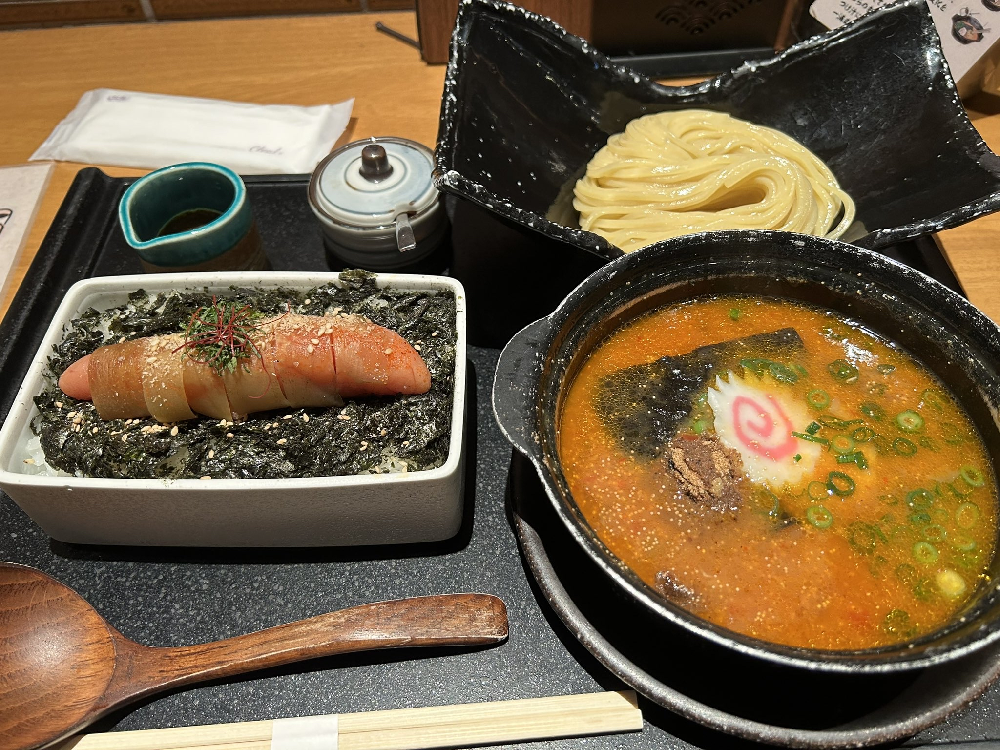
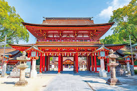
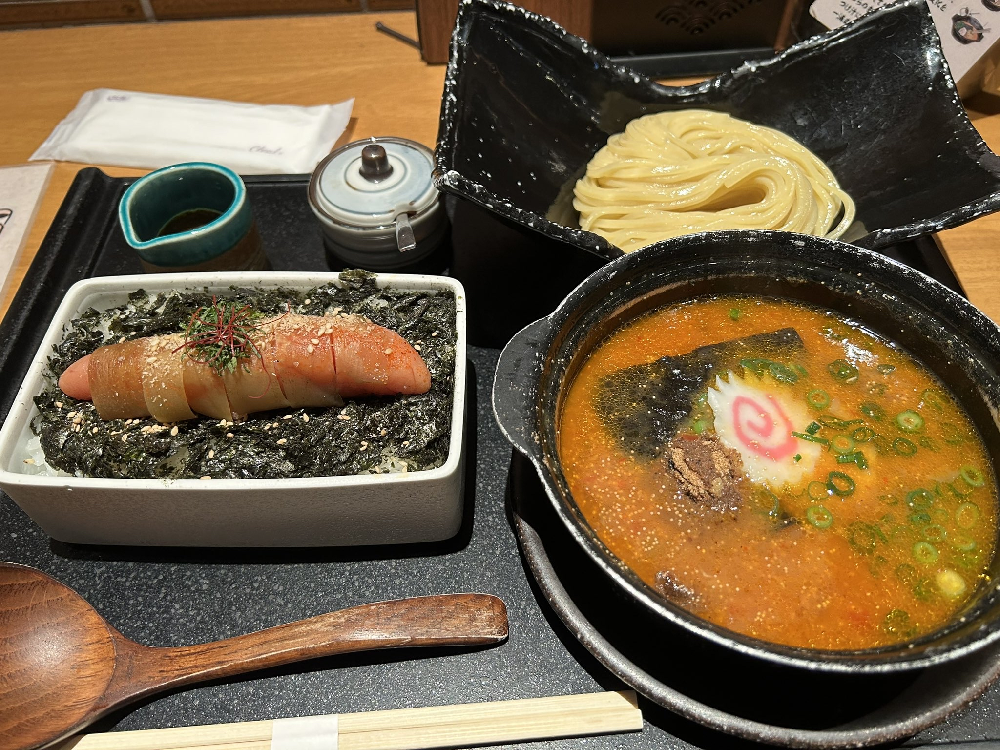
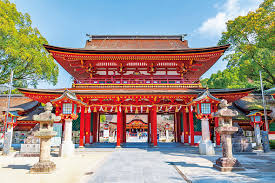
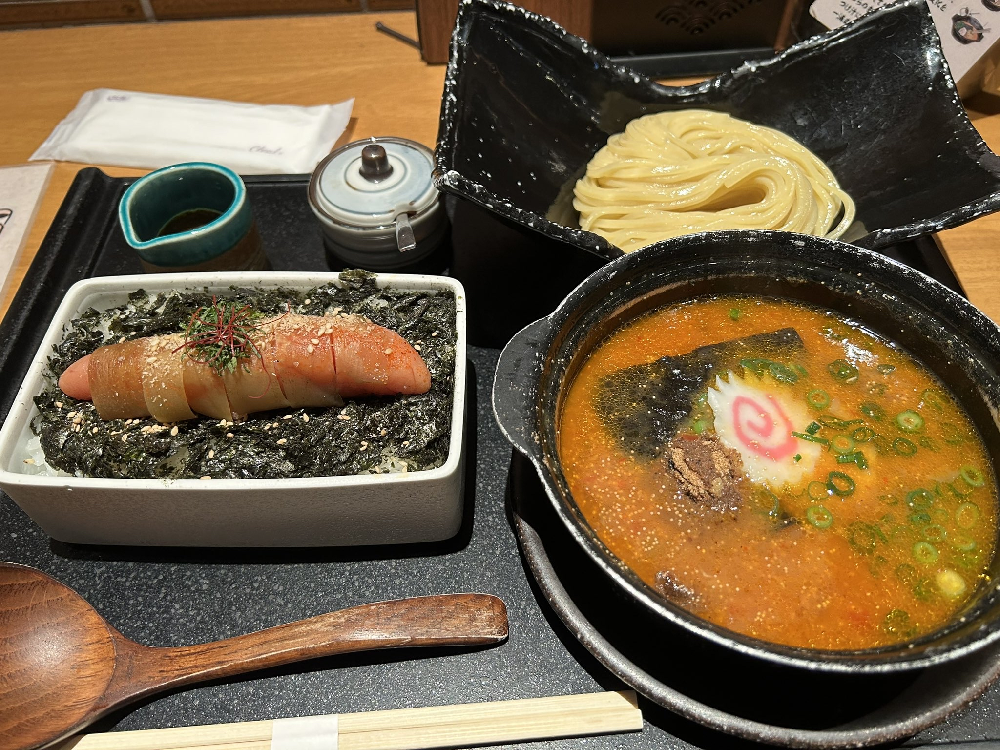
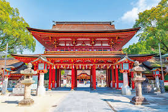

私の出身地は福岡県です。
博多ラーメンや明太子など美味しい食べ物がたくさんあります！
中洲や天神の街はにぎやかで、ショッピングや観光にも便利です。
自然も多く、太宰府天満宮や糸島の海もとてもきれいです。
都会と自然が両方楽しめるところが福岡の魅力です。


────────────────────────────────────出典:山本────────────────────────────────────